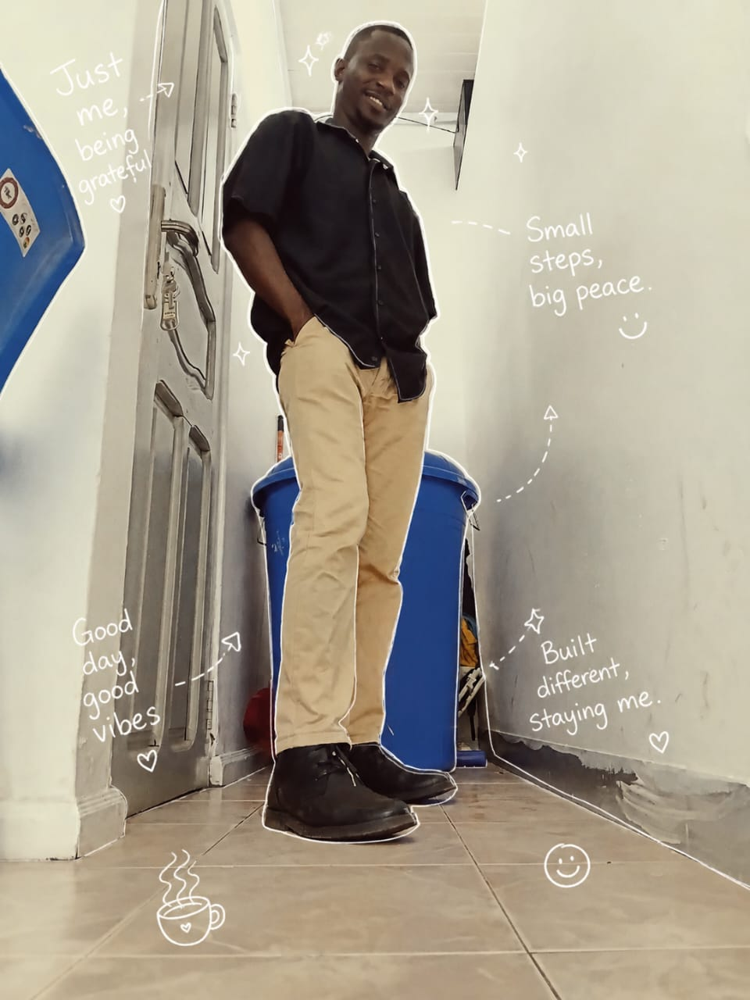

Huago Michael Kwame is an adaptable procurement and field operations professional based in Tema, Ghana. At 28, he bridges the gap between strategic supply chain management and hands-on execution. Michael specializes in managing supplier relationships, optimizing logistics, and ensuring seamless project delivery directly from the field.Driven by efficiency and precision, he thrives in fast-paced environments where quick problem-solving is essential. When he is not coordinating logistics or managing assets on-site, Michael focuses on personal development and exploring new operational strategies to improve supply chain workflows.

PROFESSIONAL GOALS
PERSONAL GOAL
To leverage my expertise in procurement and programming to optimize complex systems and deliver innovative, tech-driven solutions with absolute integrity and creativity. I am dedicated to driving operational excellence and building efficient workflows today, which will fuel my ultimate transition into a highly rich and successful industry leader. By consistently executing high-impact projects, I am actively building a powerful professional legacy that secures financial independence and positions me at the peak of my career.